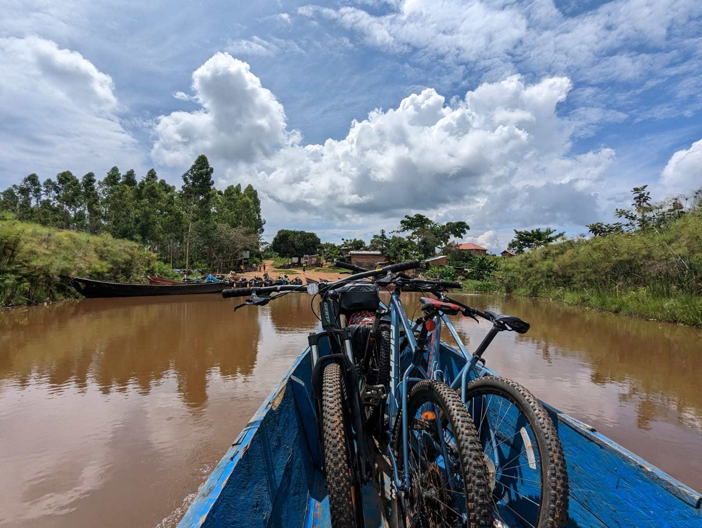
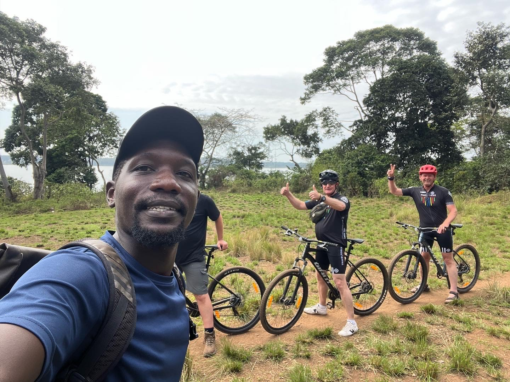

Our Trips

Short Tour 2.5-3hrs 30$ Ppn
For those with limited time, we offer a 2.5-3 hour bike tour of Entebbe for $30. This tour takes you through the main and minor places in the municipality, allowing you to see the highlights of Entebbe. It's a great option for those who want to make the most of their visit and it's a great value for the cost.

Layover Tour 3.5hrs 35$,4hrs 45$ Ppn
Bike2go Entebbe Layover Tour offers 2 options: 4 hour tour for $45 (includes Reptile Village, Botanical Gardens, market, fishing landing site, beach and other main places) or 3.5 hour tour for $35 (same places, no Reptile Village). Both tours showcase Entebbe's main sights and offer birdwatching at the Botanical Gardens

History & Cultural Tour 40$ Ppn
Our Bike2Go Entebbe tour is a unique way to experience the city's history and culture while biking. Led by an expert guide, you'll visit the Entebbe Botanical Gardens, the Entebbe Zoo, the Uganda Museum and Ndere Cultural Centre. The tour includes bike rental, guide and entrance fee for 40$

Bike and Boat 75$ Ppn,50$ Ppn Group Version
we offer the Entebbe-Bussi Island Bike & Boat that combines biking with a boat ride to Bussi Island on Lake Victoria, known for its beautiful beaches and lush vegetation. The tour includes an optional zip line and obstacle course at the end. Costs $75 for one person, and $50 per person for groups of 2 or more